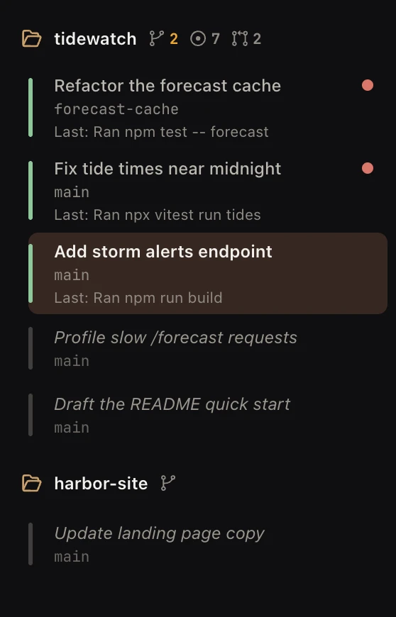
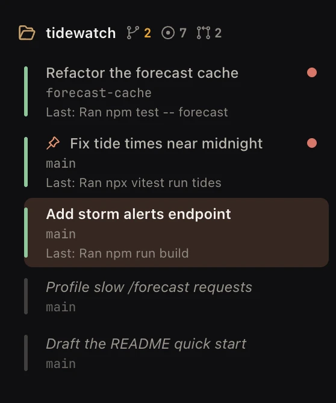
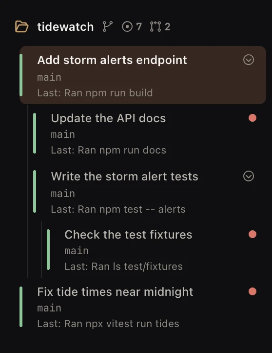
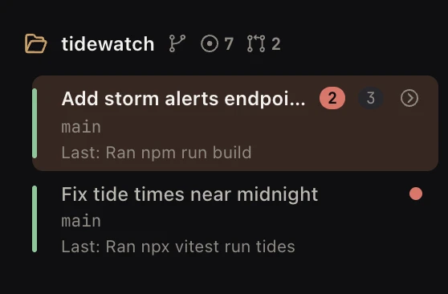
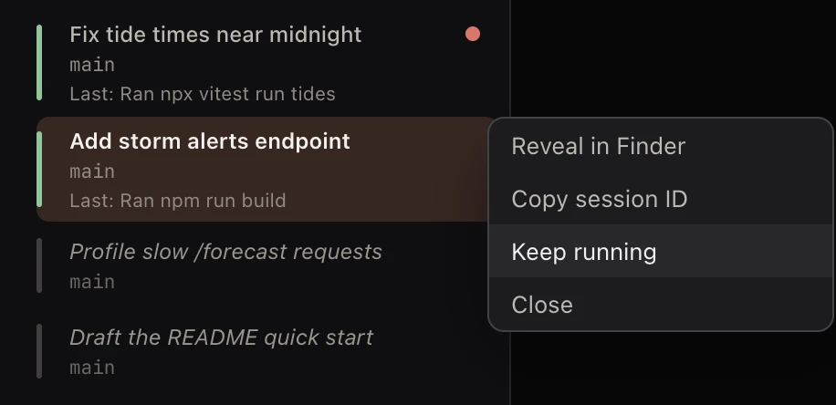
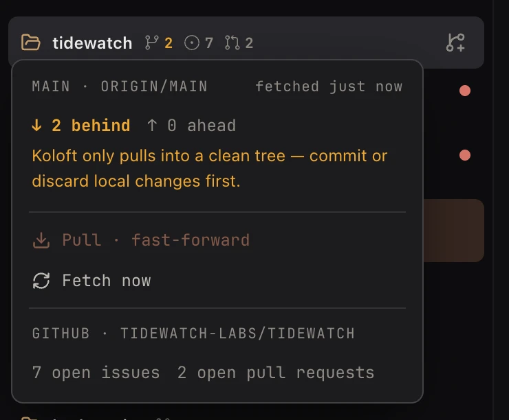

Folders and their sessions

Run a few agents for a week and you have dozens of old chats in many folders. Which one fixed the login bug? Which one is waiting for you right now? Koloft puts every folder in one list, with its sessions under it. You click a row to go back to it.
Where the list comes from
Koloft runs four agents: Claude Code, Codex, Meta's Muse Code and Google's Antigravity CLI
(agy, the one that took over from Gemini CLI; CLI means command-line tool).
Each already keeps every session in its own files. Koloft reads the chats from there and
keeps only a short list of which ones belong to Koloft. Add a folder with
⇧⌘O and its sessions show up under it. Where this page says Claude and Codex,
what Muse and Antigravity do is on the accounts,
remote and agents pages.
A session you started in a plain terminal is not listed by itself. To bring it back,
right-click the folder and pick Restore session….
Start and resume
-
⌘N starts a new session. With more than one agent installed, the button names
the one it starts, like
Start · Claude ⏎, and a small ▾ at its right end opens a numbered list of all the agents (the default one markeddefault): press a digit, or ↓ ↑ and ⏎. ⇧⏎ opens the same list; with exactly two agents, and the other one able to run, it starts that one at once. An agent that cannot run says why in the list (Unavailable,No account). Pick the default in Settings ▸ Sessions ▸ Default method. - Click an old row to resume that session.
- About half an hour after a session goes quiet (its light turns dim green), it goes to sleep: its program stops, but its row, its tab, its screen and its Workbench stay as they were. Click the row, or let something send it a message, and the same session wakes in that tab. It stays awake while you look at it, while it waits for your OK, or while a shell tab or an unsaved file is open in it. A red dot stays on it while it sleeps. A session marked Keep running never sleeps (see below).
- Quit Koloft and open it again, and every session comes back the way it was: the ones that were running run again, with the one you were on selected; the ones that were asleep stay asleep until you click them; the closed ones stay closed.
Every row has a light on its left. The colour says what the session is doing.
| light | what it means |
|---|---|
| orange | the agent is working |
| amber | it needs your OK |
| green | its turn is done |
green with ↻ N |
its turn is done, but N things it started still run in the background. The light breathes while they run. Hover the mark to see them. |
| dim green | done a while ago, nothing new; a sleeping session looks the same |
| grey | closed |
Red dots
- A small red dot after a session's name means it is calling you: its turn is done, it waits for your OK, or it quit on its own. Hover the dot to see which. It sits beside the light; it does not replace it.
- Looking at the session does not clear the dot. It goes when the session works again: you send it something, answer its question or give your OK, or another session or your butler does. It also goes when you close the tab or archive the session. It is still there after you quit and reopen Koloft (after a restart it always reads "turn done").
- One kind of dot goes once you look at it: a turn that only reports. That is a turn that ends while the session waits on other work Koloft can see (a session it started or wrote to that is still busy, or a background job it left running), or, with Assist on, a turn whose reply Assist reads as asking you for nothing. Hover the dot: it says "just letting you know".
- The number on the Dock icon counts these dots. Turn off Dock badge in Settings ▸ Notifications and the number goes, but the dots stay.
- A folded folder shows how many of its sessions are calling.
- While any session is calling, a bell with the count sits next to the sidebar button, even with the sidebar hidden. Click it, or press ⌘J (View ▸ Next Waiting Session), to go to the session that has waited longest, in any folder; the sidebar opens its folder and scrolls to its row. Click again for the next one; after the last it starts over. It wakes a sleeping session the way a click does. It skips a closed row with a dot; a click still resumes that one.
Keep running

Some sessions should always be there, like a helper you talk to all day. Right-click the
row and pick Keep running. A tick shows it is on, and a small pin sits on the
row. The session never goes to sleep, and each time Koloft opens it starts again in the
background, even if you had closed its tab. It does not pull you over to it.
If its worktree has changed, the session stays closed and Koloft says
“…” needs you — its worktree changed. Click it to resume. If its folder is
gone: Could not start “…” — its folder is gone. If it crashes while Koloft is
open, Koloft does not start it again.
- Claude: after
/clear, the mark moves to the new chat in that tab. - Codex: when the session starts a new thread, the mark moves to it.
-
Remote Claude: if the
claudeis still running intmux(a program that keeps a terminal alive after you disconnect) on the machine, Koloft joins it; it never starts a second one. If it has gone, Koloft resumes it there.
Find any session
-
⌘P (View ▸ Command Palette…) opens one box with one input. As you type, the
sessions, folders and app actions (New session…, Settings…, and so on) that fit show up
under it. Type a few letters of a session's title, its worktree, its folder or its
machine, press ↓ to pick the match, then ⏎, and you are there. It
does what a click on the row does, so a closed session is resumed. Every Settings page
is there too, found by English or Chinese words: type "shortcuts" or "快捷键" and the
row
Settings ▸ Shortcutsshows up. -
A moment after you stop typing, the sessions whose conversation holds your words show up
too, under
In conversations: up to three, with one line of text around the match, and a rowAll N conversations that mention itwhen there are more. Click that row, or press ⌥⏎, for the full search. - ⌥⏎ in the same box searches what was said. Every session in every folder whose title or conversation holds the words is listed, newest first, with one line of text around the match. Click one to open it. For Claude it reads what you typed and what the agent answered, not the output of its tools. For Codex, Codex itself does the search; a Codex session in a remote folder is found by its title only.
-
Or type what a new session should do, and press ⏎ (the button at the right
reads
Ask AI; with more than one agent it adds your default one, likeAsk AI · Claude, and a ▾ beside it lists them all). Assist picks the folder, the worktree and a title, and the session starts there with your words as its first message. In a folder git tracks it gets a worktree of its own (see worktree sessions). If the folder's branch is behind, Koloft first asks whether to pull. ⌘⏎ picks another agent, as ⇧⏎ does for ⌘N above. ⇧⏎ starts a new line. -
To pick the folder yourself, type @: a
Workspaceslist of your folders shows up and narrows as you type. ⏎ or ⇥ fills the name in; Esc puts the list away and keeps your words. A folder on another machine is named likehost:name. With a folder named, ⏎ starts the session there, with the rest of your words as its first message (if the folder's branch is behind, Koloft first asks whether to pull). Assist is skipped, so the button reads as it does with Assist off (see below). Name two different folders and the button is off; the tip readsName one workspace · Esc. - Not everything you type starts a session. "open settings" or "check for updates" just does it. Ask for a session by what it was doing ("go to the session that was fixing login"), and ⌘P jumps to it, starting nothing. With Koloft Assist on, what ⌘P cannot do by itself (words about Koloft itself like "set up Discord", "ask tidewatch …" with the folder named in plain words, a question, or work that fits more than one folder like "fix the tests") goes to a helper of your butler: a new session in the butler's own folder, under its row. The screen moves there. If the butler is closed, it opens first. The helper runs on the agent you picked (the one on the button, or one from the ▾ list or ⌘⏎), does the job and reports back to your butler. "Set up Discord" works its own way (see discord).
-
With Assist off, the button reads
Start a session(with more than one agent,Startplus your default one, likeStart · Claude) and ⏎ opens the folder picker instead. - If Assist says the words call for a brand-new project, Koloft makes the folder, adds it to the list and starts the session in it. The first time, a New Project box asks where new projects go; Koloft remembers it for next time.
All of this works for every agent, and for a session on a remote folder, which is listed with its machine's name and resumes there.
A tab is not a session
The tab is the terminal the agent runs in. The session is the chat inside it. Some things
swap the chat but keep the tab: /clear, a resume, or a restart
(⇧⌘R). The Workbench belongs to the tab, so your open files, web pages and
shell stay put.
+-- one tab ------------------------------+ | | | session A --/clear--> session B | | | | Workbench: same files, pages, shell | +-----------------------------------------+
Worktree sessions
Two agents in one folder can step on each other's files. ⇧⌘N starts a session in its own git worktree, a second copy of the repo on its own branch.
-
A session you ask for in ⌘P, and one your
butler starts in a project, gets its own worktree too
in a folder git tracks, never the folder itself and never a worktree that is already
there. Assist or the butler names it; when neither does, the worktree is called
session-<date>-<time>. A name already in use gets-2after it, then-3. Claude Code and Codex both do this, and ⌘P does it on a remote folder too. ⌘N still starts in the folder. - Claude Code removes its worktree when it exits, if nothing in it changed. If something did, Claude asks you: keep it or remove it.
-
A Codex worktree goes, folder and branch, when the last session in it ends and nothing
in it changed. A restart (⇧⌘R) or a sleep is not an end. If something did
change, it stays until you remove it yourself, or until an agent closes the session with
koloft session close(see agents, which says when that is allowed). -
A session whose worktree is gone stays in the list. Hover its row and the tip reads
worktree deleted; click to rebuild and resume; a click makes the worktree again and resumes the same session in it. Restarting it (⇧⌘R) does the same. When the worktree cannot be made again, a box titledCould not rebuild the worktreeoffersResume in main without isolation: the same session goes on in the folder itself, so every file it touches lands there. Claude and Codex both do all of this. -
In a folder on github.com, with
gh(GitHub's command-line tool) signed in or a git account picked, the ⇧⌘N dialog also lists the repo's open issues and open pull requests. Pick an issue, and the session starts in a worktree namedissue-<number>, already told which issue to read and work on. - Pick a pull request there, and the session starts in a worktree on that pull request's branch. Claude Code and Codex both do this; on a remote folder, Claude Code does it there.
Two worktrees often want the same port for the server a project runs while you work on it.
So every session in a worktree gets KOLOFT_PORT_OFFSET, a number from 1 to 99
that is always the same for one worktree name. A project can add it to its base port, like
PORT=$((3000 + KOLOFT_PORT_OFFSET)). Claude Code, Codex and
Claude Code on a remote folder all get it.
A new worktree has none of the files git ignores, such as .env. List the ones
you want in a .worktreeinclude file at the root of the repo, and they are
copied into each worktree. Claude Code copies them into the worktrees it makes. Koloft
copies them into a Codex worktree, and into a worktree it rebuilds for a resumed Claude
session. Not on a remote folder yet.
Sessions an agent starts
An agent can start sessions of its own, with koloft session new (see
agents, which also says how each one gets its name). Each one
hangs under the session that started it, set in a little, with a
thin line down its left. A session that one of those starts hangs one level deeper. The
row is there from the moment it reads Starting….

A row with sessions under it gets a small arrow on the right. Click it to fold them away. Folded, the row shows a red count of the hidden sessions that need you, the way a folded folder does, and a grey count of all the hidden ones. Click the arrow again to see them.

- Claude and Codex both do this.
-
If the session that started them ends but its row stays in the list, they stay under
that row, now shown as closed. Closing a session in the app closes nothing under it;
koloft session closealso closes the ended sessions it started (see agents). -
A row hangs under its starter only while the starter is in the same folder's list. When
the starter leaves the list (closed for good with
koloft session close, or by Remove from list), the row moves up under the starter's own starter, or to the top if there was none. A row also sits at the top when it was started into another folder with--workspace, when your butler started it, and always for a session on another machine. - A folded row works like a folded folder: switching to a session inside does not unfold it, and the fold is forgotten when Koloft restarts.
The sidebar
The first row of the list is your butler,
Alfred · Butler, above every folder. When the session tab you are looking at
goes away, Koloft shows the butler, unless that session ended before it ever started.
When the Mac is busy (macOS says memory is tight, or the processors have been very busy
for half a minute), each open session's row also shows about how much memory it and the
programs it started use on your Mac, like ≈1.2 GB. For a session on another
machine, only what runs on your Mac is counted. Nothing waits or is held back: it is only
there so you can see which session is heavy.
Drag a folder's name up or down to reorder the list. The number keys 1 to 9 in the ⌘N folder picker follow the new order.
⌘B, or the button right of the window's traffic lights, hides the whole sidebar; the button then shows how many sessions are calling you. Press it again and the sidebar comes back as wide as it was. It stays hidden after a restart, if you left it hidden.
Right-click a folder
- New session ⌘N — or, with more than one agent installed and on in Settings ▸ Sessions, one line per agent (New Claude session, New Codex session, …), the default one first with ⌘N
- New worktree session… ⇧⌘N (in a git folder)
- Restore session… — bring back a session that is not listed
- Scheduled jobs… — sessions on a timer
- Remove workspace — take the folder off the list
Right-click a session

- Resume ↩ (on a closed row)
- Reveal in Finder — on a remote folder, Copy path (machine:/path) instead
- Copy session ID
- Keep running
- Close (on a running row), or Remove from list (on a closed row)
The git panel
Hover a folder's branch sign and its git panel opens.
- Behind and ahead: how far your main branch is from origin. When it is behind, the number also shows by the branch sign.
-
Pull · fast-forwardcatches up; it never merges. Koloft pulls only the main branch, and only when you have no uncommitted changes and nothing you have not pushed yet. Fetch nowasks origin what is new.-
On github.com, with
ghsigned in or a git account picked: the open issues and pull requests. Their two counts also sit after the branch sign (a count of 0 is not drawn). - Account: which git account this folder pushes as. Shown for a folder on github.com or another host Koloft knows git accounts for, and for a remote folder whose machine has one (see git accounts on another machine).

Koloft fetches by itself every five minutes, so the numbers stay fresh. Switch off
Auto-fetch git remotes in Settings ▸ Appearance to stop that;
Fetch now still works.
Under it, Auto-pull the default branch (off at first; greyed out while
Auto-fetch is off) lets Koloft pull by itself. After each background fetch, a folder that
Pull would allow (see above) is pulled, and a small message names the folder, the branch
and how many commits came in. It waits while a session in that checkout is mid-task
(working, stopped at a permission prompt, or in a state Koloft cannot see) and tries again
on the next fetch. Claude Code and Codex sessions count the same way; a remote folder is
never pulled.
If you click Pull while a session in that checkout is mid-task, Koloft first asks
Pull into main?, because the pull would change files under that session.
Worktree sessions are not affected.
On a remote folder the panel works too, on the machine itself:
the behind number (every five minutes, and when the machine connects),
Fetch now and Pull · fast-forward. When the
machine cannot reach origin, the panel says
can't reach origin from <machine> — check its network or credentials.
While the machine is not connected, Fetch now and Pull are greyed out and the last counts
stay. The GitHub part and the Account part work as above.
Open sessions hear what changed
When a fetch finds that origin's main branch has moved, say because a pull request was
merged, Koloft tells every open session in that repository, whichever agent runs it, that
sits on another branch and does not have those commits yet. The fetch is Koloft's own
(every five minutes, while Auto-fetch is on) or Fetch now. Your butler is not
told, nor is a session on the main branch itself: the behind number, Pull and Auto-pull
serve it. Commits that came in while Koloft was closed are not announced either. The
message reads:
(From Koloft:) origin/main moved from … to …, with 2 new commits: "…", "…". …
When those commits touch files the session itself had changed, it names them, and it ends
by saying that nobody asks the session to merge or rebase: what to do is the agent's call.
When two open sessions of one repository write the same file, each is told:
The session "…" changed files you changed too: …. If both sit in the same
folder, the message says to read the file again before editing it; if they sit in two
worktrees, it says the two branches may conflict when both reach main. Only files the
agent wrote through its own tools count, not ones a shell command wrote, and only writes
made while the session was open in Koloft; each file is named once per pair of sessions.
Koloft never starts a turn for it. A session at work gets the message after its next tool call, or, if it was about to stop, just before it stops: it reads it and then stops, without anyone prompting it. A session that was waiting for you gets it with its next prompt, from you or anyone else, so it keeps its red dot, and no reply to the message alone fills its conversation. This holds for every agent, here or on a machine. You do not see the message in the terminal; the agent does. An Antigravity session sees it for the rest of that turn only.
Next page → The Workbench